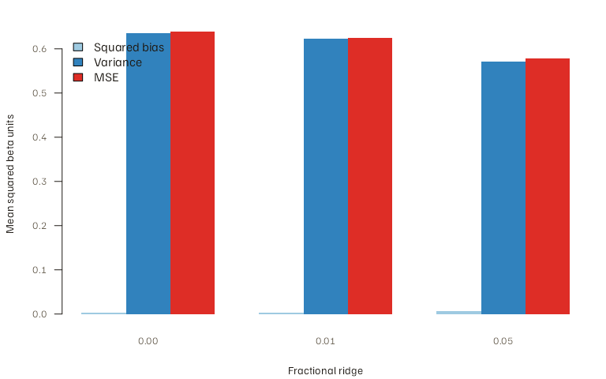
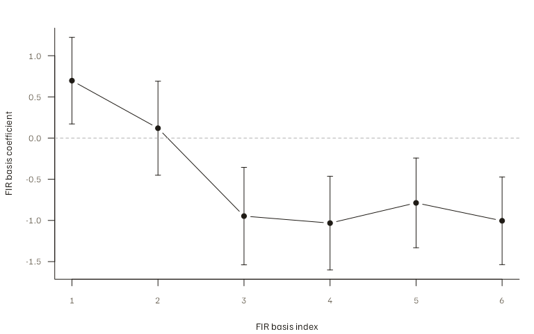

Practical OASIS: Design, Regularization, and Diagnostics
Source:vignettes/oasis_method.Rmd
oasis_method.RmdOASIS is the lss() backend to use when trial-wise
estimation needs more than a fixed one-basis design: event-based
construction, multiple HRF bases, ridge regularization, blocked voxel
products, or model-based standard errors. This guide follows
vignette("fmrilss"), keeps the public workflow visible, and
routes the derivation to vignette("oasis_theory").
Choose the contract before fitting
| Goal | Required_choice |
|---|---|
| Exact ordinary LSS | ridge_x = ridge_b = 0; absolute mode makes the zero scale explicit |
| Regularized coefficients | absolute or fractional ridge; default is fractional 0.05 |
| Model-based coefficient SEs | zero ridge, fixed full-rank design, no estimated prewhitening |
| Multiple HRF bases | interpret K coefficients per trial; do not call them one amplitude |
The bare call oasis_options() is penalized. It is not
the configuration for an exact comparison with an unpenalized LSS
backend. Likewise, return_se = TRUE is intentionally
unavailable with ridge, estimated prewhitening, HRF-grid selection, or
voxel-adaptive HRFs.
Build a two-condition example
The example has one target condition, one explicitly modeled other condition, a shared intercept and drift, heterogeneous target-trial coefficients, and a fixed iid noise scale. Keeping the mean signal separate lets us calculate the ridge bias–variance trade-off exactly for this design.
set.seed(20260811)
# Canonical HRF scaled to a unit peak, so betas are in units of peak response.
hrf_unit <- fmrihrf::normalise_hrf(fmrihrf::HRF_SPMG1)
n_time <- 180
n_voxels <- 6
TR <- 1
sframe <- fmrihrf::sampling_frame(blocklens = n_time, TR = TR)
times <- fmrihrf::samples(sframe, global = TRUE)
onsets_a <- c(10, 20, 31, 43, 56, 68, 81, 95, 108, 121, 135, 149)
onsets_b <- c(15, 37, 61, 86, 112, 141)
n_trials <- length(onsets_a)
design_spec <- list(
sframe = sframe,
cond = list(
onsets = onsets_a,
hrf = hrf_unit,
duration = 0,
amplitude = 1,
span = 30
),
others = list(list(
onsets = onsets_b,
hrf = hrf_unit,
duration = 0,
amplitude = 1,
span = 30
)),
precision = 0.1,
method = "conv"
)For the simulation and independent oracles, the same trial and
other-condition regressors are also evaluated explicitly. In an
analysis, Y would normally be the observed time-by-voxel
response rather than a simulated matrix.
true_beta <- matrix(
rnorm(n_trials * n_voxels, mean = 1, sd = 0.35),
n_trials,
n_voxels
)
other_beta <- matrix(seq(0.4, 0.9, length.out = n_voxels), 1L)
fixed_beta <- rbind(
seq(-0.3, 0.3, length.out = n_voxels),
seq(0.2, -0.2, length.out = n_voxels)
)
mean_signal <- X_trials %*% true_beta +
X_other %*% other_beta +
Z %*% fixed_beta
noise_sd <- 1.5
Y <- mean_signal + matrix(rnorm(n_time * n_voxels, sd = noise_sd),
n_time, n_voxels)| Object | Rows | Columns |
|---|---|---|
| Y | 180 | 6 |
| target trial design | 180 | 12 |
| other-condition aggregate | 180 | 1 |
| fixed design | 180 | 2 |
Fit from events
Put the condition whose trial coefficients you want in
cond. Put modeled conditions that should not become trial
targets in others; OASIS adds their aggregate basis columns
to the common span.
fit_default <- lss(
Y = Y,
X = NULL,
Z = Z,
method = "oasis",
oasis = oasis_options(design_spec = design_spec)
)
dim(fit_default)
#> [1] 12 6
fit_default[1:4, 1:3]
#> Voxel_1 Voxel_2 Voxel_3
#> Trial_1 1.5641689 1.7579667 1.8345523
#> Trial_2 1.4541214 0.3269049 1.8040081
#> Trial_3 0.8812229 0.3447504 -0.1357292
#> Trial_4 1.3235624 1.2075484 -0.9014281The default result is an n_trials by
n_voxels matrix because this is a one-basis design. These
are fractionally penalized coefficients. The simulation really contains
condition B, so others is doing identifiable work rather
than decorating the call.
Match ordinary LSS exactly when that is the target
Use explicit zero ridge. The verification assembles every
corresponding GLM independently as
[target trial, other target trials, Z, condition B] and
checks all trials and voxels.
fit_unpenalized <- lss(
Y = Y,
X = NULL,
Z = Z,
method = "oasis",
oasis = oasis_options(
design_spec = design_spec,
ridge_mode = "absolute",
ridge_x = 0,
ridge_b = 0
)
)| Maximum_absolute_error |
|---|
| 0 |
For a fixed one-basis X, this is the same estimand as
the other unpenalized LSS backends. OASIS is useful here because the
event and other-condition design can be constructed and checked in the
same workflow.
Evaluate ridge on the scale you care about
Ridge reduces sampling variance by accepting bias. A smaller spread
of fitted trials is not, by itself, evidence of improvement. For this
fixed design and truth, OASIS is linear in Y, so applying
each fit to the noise-free signal and to the identity matrix gives exact
conditional bias and variance under the iid noise model.
| Fractional_ridge | Mean_absolute_bias | Mean_squared_bias | Mean_variance | Mean_MSE | RMSE | Monte_Carlo_MSE |
|---|---|---|---|---|---|---|
| 0.00 | 0.0345 | 0.0022 | 0.6371 | 0.6393 | 0.7996 | 0.6079 |
| 0.01 | 0.0380 | 0.0023 | 0.6231 | 0.6254 | 0.7908 | 0.6209 |
| 0.05 | 0.0747 | 0.0070 | 0.5717 | 0.5787 | 0.7607 | 0.5907 |

Exact squared bias, variance, and MSE for three fractional-ridge settings in the fixed simulation; all bars use squared-beta units.
This is one scenario, not a universal ranking. Choose a ridge policy using a simulation that matches the planned timing, basis, nuisance structure, signal scale, and downstream loss. The package does not justify generic penalty cutoffs from inter-stimulus interval alone. Even the zero-penalty row has a small bias against the generating trial effects: ordinary LSS gives all other target trials one shared coefficient, while this simulation gives them heterogeneous coefficients. The table therefore evaluates the full LSS estimator against the generating effects, not merely ridge against an unpenalized LSS reference.
Inspect design diagnostics
return_diag = TRUE changes the return to a list. For a
one-basis fit, d, alpha, and s
are the target energy, target–other cross-product, and other-trial
energy after projection.
fit_diag <- lss(
Y,
X_trials,
Z = Z,
Nuisance = X_other,
method = "oasis",
oasis = oasis_options(return_diag = TRUE)
)
diagnostics <- with(fit_diag$diag, data.frame(
target_energy = d,
other_energy = s,
target_other_correlation = alpha / sqrt(d * s)
))
head(diagnostics, 4)
#> target_energy other_energy target_other_correlation
#> trial_01 3.584692 20.70195 -0.2239838
#> trial_02 3.650588 21.49016 -0.2660595
#> trial_03 3.691278 21.65657 -0.2751521
#> trial_04 3.754391 21.39954 -0.2636462These are unpenalized cross-products on the residualized design scale. They are useful for finding low-energy or highly correlated trials, but they are not a condition number, a ridge calibration, or an inferential test.
Multi-basis output is not one amplitude
An event-built SPMG3 design has three rows per trial: canonical, temporal derivative, and dispersion-derivative coefficients in that basis. Their scale depends on the basis definition.
spec_spmg3 <- design_spec
spec_spmg3$cond$hrf <- fmrihrf::HRF_SPMG3
spec_spmg3$others[[1]]$hrf <- fmrihrf::HRF_SPMG3
fit_spmg3 <- lss(
Y,
X = NULL,
Z = Z,
method = "oasis",
oasis = oasis_options(design_spec = spec_spmg3, return_diag = TRUE)
)
K_spmg3 <- 3L
c(rows = nrow(fit_spmg3$beta), trials = n_trials, basis_dimension = K_spmg3)
#> rows trials basis_dimension
#> 36 12 3
rownames(fit_spmg3$beta)[1:6]
#> [1] "Trial_1:Basis_1" "Trial_1:Basis_2" "Trial_1:Basis_3" "Trial_2:Basis_1"
#> [5] "Trial_2:Basis_2" "Trial_2:Basis_3"The NK by V output is in canonical
trial-major, basis-minor order. Keep the row names or reshape
explicitly; do not infer a scalar response amplitude from the canonical
row alone unless a separate normalization and estimand justify that
operation.
If you already have a raw multi-basis matrix, identity is part of the
input contract. X_multi must have unique, non-empty column
names, and the map must identify every column with one exact-integer
trial and basis pair. OASIS canonicalizes the matrix to trial-major,
basis-minor order and attaches the canonical map to the returned beta
matrix.
For this controlled source construction, we know the trial-major, basis-minor order and capture those identities before deliberately permuting its columns. For a different upstream design, use that producer’s metadata; never infer identity from the order in which an arbitrary matrix happens to arrive.
K <- K_spmg3
source_map <- data.frame(
column = sprintf("source_%02d", seq_len(ncol(X_spmg3_source))),
trial = rep(seq_len(n_trials), each = K),
basis = rep(seq_len(K), times = n_trials)
)
colnames(X_spmg3_source) <- source_map$column
column_order <- rev(seq_len(ncol(X_spmg3_source)))
X_multi <- X_spmg3_source[, column_order, drop = FALSE]
fit_raw_multi <- lss(
Y,
X_multi,
Z = Z,
Nuisance = X_other_spmg3,
method = "oasis",
oasis = oasis_options(
K = K,
ntrials = n_trials,
trial_basis_map = source_map,
return_diag = TRUE
)
)
raw_permutation_error <- max(abs(fit_raw_multi$beta - fit_spmg3$beta))
c(maximum_beta_error = raw_permutation_error)
#> maximum_beta_error
#> 0
head(attr(fit_raw_multi$beta, "trial_basis_map"), 3)
#> column trial basis output_name
#> 1 source_01 1 1 Trial_1:Basis_1
#> 2 source_02 1 2 Trial_1:Basis_2
#> 3 source_03 1 3 Trial_1:Basis_3Without optional returns, OASIS returns the NK by
V beta matrix. Setting return_diag = TRUE or
return_se = TRUE returns a list containing
beta, then diag when requested, then
se when requested. beta and se
are both NK by V. For K = 1,
diag contains vectors d, alpha,
and s, each of length N. For
K > 1, it contains D, C, and
E arrays of shape K by K by
N. Diagnostics describe the residualized design, or the
whitened-and-residualized design when whitening is active.
Standard errors require the unpenalized fixed-design model
For a judgeable SE example, generate data that exactly satisfy each
LSS model: all target trials share a common coefficient vector,
condition B and Z are in the fitted common span, and the
temporal errors are iid Gaussian.
fit_se <- lss(
Y_se,
X_trials,
Z = Z,
Nuisance = X_other,
method = "oasis",
oasis = oasis_options(
ridge_mode = "absolute",
ridge_x = 0,
ridge_b = 0,
return_se = TRUE
)
)
dim(fit_se$beta)
#> [1] 12 6
dim(fit_se$se)
#> [1] 12 6| Maximum_beta_error | Maximum_SE_error |
|---|---|
| 0 | 0 |
These are conditional, coefficient-scale model SEs under spherical
temporal errors. They are not robust to autocorrelation or
heteroskedasticity. The result does not carry a ready-made
multiple-testing or population-inference procedure, and estimated
whitening cannot be combined with return_se = TRUE.
FIR coefficients and their uncertainty
FIR output also has one row per basis coefficient, trial, and voxel. To keep the uncertainty unit honest, the next plot shows one trial and one voxel with its coefficient-wise model SE. It is not an across-voxel or across-trial SE for an average HRF. The data generator uses a correctly specified FIR target-plus-other-trials model with iid Gaussian errors, and the verification assembles every corresponding GLM independently.
fit_fir <- lss(
Y_fir,
X = NULL,
Z = Z,
method = "oasis",
oasis = oasis_options(
design_spec = spec_fir,
ridge_mode = "absolute",
ridge_x = 0,
ridge_b = 0,
return_se = TRUE
)
)
dim(fit_fir$beta)
#> [1] 72 6
dim(fit_fir$se)
#> [1] 72 6| Maximum_beta_error | Maximum_SE_error |
|---|---|
| 0 | 0 |

FIR basis coefficients plus or minus one conditional model SE for trial 1, voxel 1; the y-axis is coefficient scale, not a normalized HRF amplitude.
FIR models can be poorly conditioned because each trial contributes
many columns. Ridge may be scientifically useful, but ridge and
return_se = TRUE are different contracts; the package does
not report inferential FIR SEs for a penalized fit.
HRF-grid selection is exploratory
hrf_grid chooses one candidate from the observed
Y using a matched-filter score after residualizing both the
response and candidate against the full common span (Z,
Nuisance, and modeled others), then fits that
design. The call shown returns the beta matrix. Even when design
diagnostics are requested, the public lss() route does not
expose the winning candidate or candidate scores, and it does not return
selection-adjusted uncertainty.
grid_spec <- design_spec
grid_spec$hrf_grid <- list(fmrihrf::HRF_SPMG1, fmrihrf::HRF_GAMMA)
fit_grid <- lss(
Y,
X = NULL,
Z = Z,
method = "oasis",
oasis = oasis_options(
design_spec = grid_spec,
ridge_mode = "fractional",
ridge_x = 0.01,
ridge_b = 0.01
)
)
dim(fit_grid)
#> [1] 12 6The following known-truth check makes that conditioning rule judgeable. Its target signal is Gaussian, while a much stronger other-condition signal uses SPMG1. The grid fit must match the otherwise identical fit with the Gaussian target fixed in advance.
| Maximum_Gaussian_reference_error |
|---|
| 0 |
Because selection and estimation use the same data, treat this as
exploratory or validate the selection out of sample.
return_se = TRUE fails closed on this route. For explicitly
normalized voxel-specific shapes, continue to
vignette("voxel-wise-hrf").
Prewhitening changes the fitted space
Use the top-level prewhiten argument. The same estimated
operator is applied to the response, target design, and common design
before OASIS fits coefficients.
set.seed(20260814)
ar_error <- apply(matrix(rnorm(n_time * n_voxels), n_time), 2, function(x) {
as.numeric(stats::filter(x, filter = 0.6, method = "recursive"))
})
Y_ar <- mean_signal + ar_error
pw_ar <- prewhiten_options(method = "ar", p = 1, pooling = "global")
fit_ar <- lss(
Y_ar,
X_trials,
Z = Z,
Nuisance = X_other,
method = "oasis",
oasis = oasis_options(
ridge_mode = "absolute",
ridge_x = 0,
ridge_b = 0
),
prewhiten = pw_ar
)
dim(fit_ar)
#> [1] 12 6| Maximum_backend_error |
|---|
| 0 |
This demonstrates the coefficient path, not that AR(1) is adequate for every dataset. Choose the order and pooling from residual diagnostics and the study design. A shared OASIS design supports global or run-level operators; voxel- and parcel-specific operators are rejected because they cannot be applied to one shared design matrix.
run_lengths <- c(90L, 90L)
run_id <- rep(seq_along(run_lengths), times = run_lengths)
runwise <- prewhiten_options(
method = "ar",
p = 1,
pooling = "run",
runs = run_id
)
length(run_id)
#> [1] 180Always provide run labels when data span multiple runs so filtering
does not cross run boundaries. pooling = "global" with
runs uses one shared set of noise coefficients while still
respecting those boundaries; pooling = "run" estimates a
separate set for each run. Estimated-prewhitening uncertainty is not
calibrated, so this coefficient route cannot also request OASIS model
SEs.
A compact decision guide
- Use a standard LSS backend for a fixed one-basis
Xwhen you want the leanest unpenalized path. - Use OASIS for event construction, modeled other conditions, multiple bases, ridge, blocked products, or fixed-design model SEs.
- Treat ridge, HRF selection, and estimated whitening as changes to the estimation contract, not harmless speed options.
- Preserve row names and trial/basis identity whenever .
Next steps
-
vignette("oasis_theory")— derivation, complexity, memory, and inference boundaries -
vignette("lss_with_fmridesign")— run-aware event-table construction -
vignette("voxel-wise-hrf")— normalized voxel-specific HRF shapes -
vignette("sbhm")— library-constrained voxel-specific HRFs
Reference
Mumford, J. A., Turner, B. O., Ashby, F. G., & Poldrack, R. A. (2012). Deconvolving BOLD activation in event-related designs for multivoxel pattern classification analyses. NeuroImage, 59(3), 2636–2643. https://doi.org/10.1016/j.neuroimage.2011.08.076